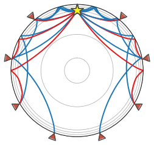
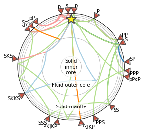

LAB 7 - Seismic raypaths#
We can import some of the familar toolkits we have been using already to understand how seismic waves travel through the deep Earth:
#you can use these libraries by refering to their appreviation plt., np., pd. or ccrs
#basic plotting library
import matplotlib.pyplot as plt
#scientifc computing library
import numpy as np
# mapping toolkit
import cartopy.crs as ccrs
import cartopy
# Import them all here ( check everything is installed )
Here we will make a new figure - a map of the globe with one seismic station and one earthquake (eq)
import matplotlib.pyplot as plt
import cartopy.crs as ccrs
import cartopy
# create new figure, axes instances.
fig=plt.figure()
# set up map projection.
ax = fig.add_subplot(1,1,1, projection=ccrs.Orthographic(37,40))
# plot bathymetry/topgraphy:
ax.add_feature(cartopy.feature.LAND, edgecolor='black')
ax.add_feature(cartopy.feature.OCEAN)
ax.gridlines()
# define the station and epicenter of the earthquake
station = dict(lon=37, lat=0)
eq = dict(lon=0, lat=37)
lons = [station['lon'], eq['lon']]
lats = [station['lat'], eq['lat']]
# plot the epicentral (angular) distance and Great Circle Path
ax.plot(lons, lats, 'bo', markersize=7, transform=ccrs.PlateCarree())
ax.plot(lons, lats, label='Great Circle', transform=ccrs.PlateCarree())
ax.coastlines()
ax.legend()
ax.set_global()
import numpy as np
# define the epicentral (angular) distance Delta and plot this as a circle on the map:
Delta = np.deg2rad(50) * 6370
ax.tissot(rad_km=Delta, lons=station['lon'], lats=station['lat'], n_samples=200, facecolor="None", edgecolor="Blue")
ax.tissot(rad_km=Delta, lons=eq['lon'], lats=eq['lat'], n_samples=200, facecolor="None", edgecolor="Red")
plt.show()
/Users/lmoresi/miniconda3/envs/jupyterbook/lib/python3.7/site-packages/cartopy/mpl/geoaxes.py:763: UserWarning: Approximating coordinate system <cartopy._crs.Geodetic object at 0x7fc55c521650> with the PlateCarree projection.
'PlateCarree projection.'.format(crs))
/Users/lmoresi/miniconda3/envs/jupyterbook/lib/python3.7/site-packages/cartopy/mpl/geoaxes.py:763: UserWarning: Approximating coordinate system <cartopy._crs.Geodetic object at 0x7fc55c5215f0> with the PlateCarree projection.
'PlateCarree projection.'.format(crs))
Now you make a new map of the globe but following the instructions listed in Part III of the Lab7 document on Wattle
#Try it here!
Now make a figure of ray paths through the Earth based upon the parameters listed below. Change the depth of the earthquake and the phases plotted to see how they compare.
#Try it here!
from obspy.taup.tau import plot_ray_paths
fig, ax = plt.subplots(subplot_kw=dict(polar=True))
ax = plot_ray_paths(source_depth=600, ax=ax, fig=fig, phase_list=['PP', 'SP', 'SKP'],
npoints=10)

Now you can make another more detailed figure of all the different seismic phases listed in the PHASES below
from obspy.taup import TauPyModel
PHASES = [
# Phase, distance
('P', 26),
('PP', 60),
('PPP', 94),
('PPS', 155),
('p', 3),
('pPcP', 100),
('PKIKP', 170),
('PKJKP', 194),
('S', 65),
('SP', 85),
('SS', 134.5),
('SSS', 204),
('p', -10),
('pP', -37.5),
('s', -3),
('sP', -49),
('ScS', -44),
('SKS', -82),
('SKKS', -120),
]
model = TauPyModel(model='iasp91')
fig, ax = plt.subplots(subplot_kw=dict(polar=True))
# Plot all pre-determined phases
for phase, distance in PHASES:
arrivals = model.get_ray_paths(700, distance, phase_list=[phase])
ax = arrivals.plot_rays(plot_type='spherical',
legend=False, label_arrivals=True,
plot_all=True,
show=False, ax=ax)
# Annotate regions
ax.text(0, 0, 'Solid\ninner\ncore',
horizontalalignment='center', verticalalignment='center',
bbox=dict(facecolor='white', edgecolor='none', alpha=0.7))
ocr = (model.model.radius_of_planet -
(model.model.s_mod.v_mod.iocb_depth +
model.model.s_mod.v_mod.cmb_depth) / 2)
ax.text(np.deg2rad(180), ocr, 'Fluid outer core',
horizontalalignment='center',
bbox=dict(facecolor='white', edgecolor='none', alpha=0.7))
mr = model.model.radius_of_planet - model.model.s_mod.v_mod.cmb_depth / 2
ax.text(np.deg2rad(180), mr, 'Solid mantle',
horizontalalignment='center',
bbox=dict(facecolor='white', edgecolor='none', alpha=0.7))
plt.show()
